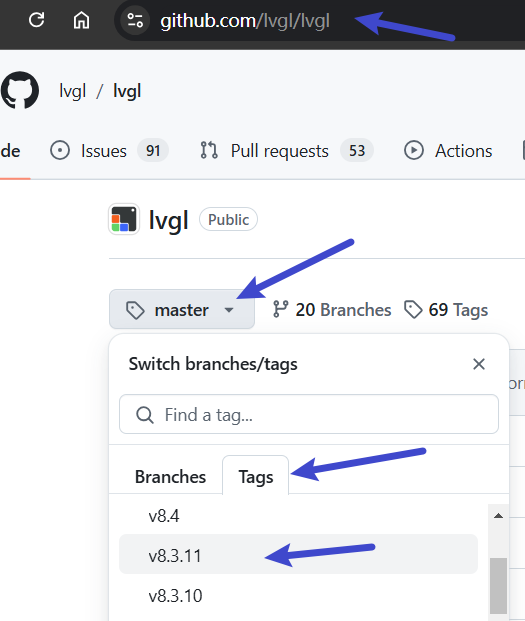
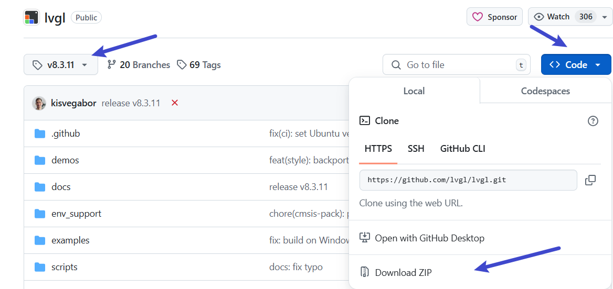

<!DOCTYPE lake>
<h2 data-lake-id="Zif5G" id="Zif5G"><span data-lake-id="u2a78efca" id="u2a78efca">触摸驱动</span></h2><h3 data-lake-id="HhgVh" id="HhgVh"><span data-lake-id="u23c60869" id="u23c60869">引脚对应关系</span></h3><table class="lake-table" data-lake-id="UtYfp" id="UtYfp" margin="true" style="width: 406px" width-mode="contain"><colgroup><col width="135"/><col width="135"/><col width="136"/></colgroup><tbody><tr data-lake-id="u18b58fa3" id="u18b58fa3"><td data-lake-id="ua6e09bc8" id="ua6e09bc8" style="vertical-align: middle"><p data-lake-id="ua981ec8c" id="ua981ec8c" style="text-align: center"><span data-lake-id="ud6f31744" id="ud6f31744">功能</span></p></td><td data-lake-id="u441cf640" id="u441cf640" style="vertical-align: middle"><p data-lake-id="u6728e793" id="u6728e793" style="text-align: center"><span data-lake-id="u953da848" id="u953da848">GenkiPI对应引脚</span></p></td><td data-lake-id="u10abc48b" id="u10abc48b" style="vertical-align: middle"><p data-lake-id="uf7238ceb" id="uf7238ceb" style="text-align: center"><span data-lake-id="u5c1558cb" id="u5c1558cb">天空星扩展板</span></p></td></tr><tr data-lake-id="uc313503c" id="uc313503c"><td data-lake-id="u2a9dcdd3" id="u2a9dcdd3" style="vertical-align: middle"><p data-lake-id="u1f792837" id="u1f792837" style="text-align: center"><span data-lake-id="u5e16bc4d" id="u5e16bc4d">SCL</span></p></td><td data-lake-id="u1feda809" id="u1feda809" style="vertical-align: middle"><p data-lake-id="u5c81e188" id="u5c81e188" style="text-align: center"><span data-lake-id="u9f10b676" id="u9f10b676">GPIO_09</span></p></td><td data-lake-id="u202dca50" id="u202dca50" style="vertical-align: middle"><p data-lake-id="u947db652" id="u947db652" style="text-align: center"><span data-lake-id="u8a9d2d98" id="u8a9d2d98">PB06</span></p></td></tr><tr data-lake-id="u22d5ac1e" id="u22d5ac1e"><td data-lake-id="ue8d817a2" id="ue8d817a2" style="vertical-align: middle"><p data-lake-id="u082fb3d1" id="u082fb3d1" style="text-align: center"><span data-lake-id="ua6383e22" id="ua6383e22">SDA</span></p></td><td data-lake-id="u8d8a3a31" id="u8d8a3a31" style="vertical-align: middle"><p data-lake-id="ufb0699f1" id="ufb0699f1" style="text-align: center"><span data-lake-id="u2dbddd5a" id="u2dbddd5a">GPIO_10</span></p></td><td data-lake-id="uf658997b" id="uf658997b" style="vertical-align: middle"><p data-lake-id="u0ab29f2d" id="u0ab29f2d" style="text-align: center"><span data-lake-id="u489b0f80" id="u489b0f80">PB07</span></p></td></tr><tr data-lake-id="u93f660a1" id="u93f660a1"><td data-lake-id="u912aea05" id="u912aea05" style="vertical-align: middle"><p data-lake-id="udbf05d60" id="udbf05d60" style="text-align: center"><span data-lake-id="u04757931" id="u04757931">RST</span></p></td><td data-lake-id="ue761e733" id="ue761e733" style="vertical-align: middle"><p data-lake-id="ub20d7fbb" id="ub20d7fbb" style="text-align: center"><span data-lake-id="u40898407" id="u40898407">GPIO_12</span></p></td><td data-lake-id="uce662ef5" id="uce662ef5" style="vertical-align: middle"><p data-lake-id="uf9a14697" id="uf9a14697" style="text-align: center"><span data-lake-id="uebd0d05b" id="uebd0d05b">PD7</span></p></td></tr><tr data-lake-id="uf565366f" id="uf565366f"><td data-lake-id="u170c782f" id="u170c782f" style="vertical-align: middle"><p data-lake-id="u6f624332" id="u6f624332" style="text-align: center"><span data-lake-id="uc96ed899" id="uc96ed899">INT</span></p></td><td data-lake-id="uf4901654" id="uf4901654" style="vertical-align: middle"><p data-lake-id="u2ce30d2d" id="u2ce30d2d" style="text-align: center"><span data-lake-id="ufc72139c" id="ufc72139c">GPIO_13</span></p></td><td data-lake-id="u5779d321" id="u5779d321" style="vertical-align: middle"><p data-lake-id="u707403ef" id="u707403ef" style="text-align: center"><span data-lake-id="u5fb9959b" id="u5fb9959b">PB4</span></p></td></tr></tbody></table><h3 data-lake-id="E0evV" id="E0evV"><span data-lake-id="u135e0c96" id="u135e0c96">CST816驱动移植</span></h3><h4 data-lake-id="IoFNM" id="IoFNM"><span data-lake-id="u40fdc231" id="u40fdc231">引脚实现</span></h4><span class="yuque-card-unsupported">[codeblock]</span><span class="yuque-card-unsupported">[codeblock]</span><span class="yuque-card-unsupported">[codeblock]</span><span class="yuque-card-unsupported">[codeblock]</span><h4 data-lake-id="SYvUT" id="SYvUT"><span data-lake-id="u8c0ce472" id="u8c0ce472">I2C读写实现</span></h4><span class="yuque-card-unsupported">[codeblock]</span><h3 data-lake-id="izE6Q" id="izE6Q"><span data-lake-id="u45ce992f" id="u45ce992f">开发流程</span></h3><p data-lake-id="ucf9fb2e7" id="ucf9fb2e7"><span data-lake-id="udb86a021" id="udb86a021">来到应用开发的</span><strong><span data-lake-id="u5f5bb35f" id="u5f5bb35f">根目录。</span></strong></p><p data-lake-id="u369321a4" id="u369321a4"><span data-lake-id="u2fcc4a8f" id="u2fcc4a8f">我们编写代码的</span><strong><span data-lake-id="u69621125" id="u69621125">根目录</span></strong><span data-lake-id="u578c9e71" id="u578c9e71">为</span><code data-lake-id="uc04e0e93" id="uc04e0e93"><span data-lake-id="u4fa7694c" id="u4fa7694c">device/board/itcast/genkipi/app</span></code><span data-lake-id="u557efe63" id="u557efe63">。</span></p><ol list="u8a95ebfb"><li data-lake-id="ub3d84f44" fid="u3177aa8f" id="ub3d84f44"><strong><span data-lake-id="u1fcc05e0" id="u1fcc05e0">根目录</span></strong><span data-lake-id="uf2dbe35c" id="uf2dbe35c">下新建</span><code data-lake-id="u1dfee588" id="u1dfee588"><span data-lake-id="u0cc616e6" id="u0cc616e6" style="color: rgb(54, 70, 78); background-color: rgb(245, 245, 245)">cst816</span></code><span data-lake-id="u8cc8ee95" id="u8cc8ee95" style="color: rgb(54, 70, 78); background-color: rgb(245, 245, 245)">文件夹，此为</span><strong><span data-lake-id="u52c3ef5f" id="u52c3ef5f" style="color: rgb(54, 70, 78); background-color: rgb(245, 245, 245)">项目目录</span></strong><span data-lake-id="u5a787b9d" id="u5a787b9d" style="color: rgb(54, 70, 78); background-color: rgb(245, 245, 245)">。</span></li><li data-lake-id="u36e1eeca" fid="u3177aa8f" id="u36e1eeca"><span data-lake-id="u572147bc" id="u572147bc" style="color: rgb(54, 70, 78); background-color: rgb(245, 245, 245)">此</span><strong><span data-lake-id="uac405abd" id="uac405abd" style="color: rgb(54, 70, 78); background-color: rgb(245, 245, 245)">项目目录</span></strong><span data-lake-id="u2ae7e7f2" id="u2ae7e7f2" style="color: rgb(54, 70, 78); background-color: rgb(245, 245, 245)">下新建</span><code data-lake-id="u056996bb" id="u056996bb"><span data-lake-id="u046af225" id="u046af225" style="color: rgb(54, 70, 78); background-color: rgb(245, 245, 245)">main.c</span></code><span data-lake-id="u99a1c783" id="u99a1c783" style="color: rgb(54, 70, 78); background-color: rgb(245, 245, 245)">,</span><code data-lake-id="ud1d9d8d2" id="ud1d9d8d2"><span data-lake-id="u6163043a" id="u6163043a" style="color: rgb(54, 70, 78); background-color: rgb(245, 245, 245)">cst816t.h</span></code><span data-lake-id="ubfdded68" id="ubfdded68" style="color: rgb(54, 70, 78); background-color: rgb(245, 245, 245)">,</span><code data-lake-id="u07945fa5" id="u07945fa5"><span data-lake-id="u2413fbe2" id="u2413fbe2" style="color: rgb(54, 70, 78); background-color: rgb(245, 245, 245)">cst816t.c</span></code><span data-lake-id="u191f68a1" id="u191f68a1" style="color: rgb(54, 70, 78); background-color: rgb(245, 245, 245)">文件</span></li><li data-lake-id="u1b3f37ec" fid="u3177aa8f" id="u1b3f37ec"><span data-lake-id="u623ed7ef" id="u623ed7ef" style="color: rgb(54, 70, 78); background-color: rgb(245, 245, 245)">此</span><strong><span data-lake-id="ua763e567" id="ua763e567" style="color: rgb(54, 70, 78); background-color: rgb(245, 245, 245)">项目目录</span></strong><span data-lake-id="ue7d05019" id="ue7d05019" style="color: rgb(54, 70, 78); background-color: rgb(245, 245, 245)">下新建</span><code data-lake-id="u16f26963" id="u16f26963"><span data-lake-id="u6ab771c1" id="u6ab771c1" style="color: rgb(54, 70, 78); background-color: rgb(245, 245, 245)">BUILD.gn</span></code><span data-lake-id="ud73b704a" id="ud73b704a" style="color: rgb(54, 70, 78); background-color: rgb(245, 245, 245)">文件</span></li><li data-lake-id="u4ef0faff" fid="u3177aa8f" id="u4ef0faff"><span data-lake-id="u27e873ed" id="u27e873ed" style="color: rgba(0, 0, 0, 0.87)">修改</span><strong><span data-lake-id="ucef697da" id="ucef697da" style="color: rgba(0, 0, 0, 0.87)">根目录</span></strong><span data-lake-id="u4229f8f3" id="u4229f8f3" style="color: rgba(0, 0, 0, 0.87)">下的</span><code data-lake-id="uc159067c" id="uc159067c"><span data-lake-id="uf97bc664" id="uf97bc664" style="color: rgba(0, 0, 0, 0.87)">BUILD.gn</span></code><span data-lake-id="u7e36aa92" id="u7e36aa92" style="color: rgba(0, 0, 0, 0.87)">文件</span></li></ol><h4 data-lake-id="FPKz1" id="FPKz1"><span data-lake-id="u204bafc5" id="u204bafc5" style="color: rgba(0, 0, 0, 0.87)">代码部分</span></h4><span class="yuque-card-unsupported">[codeblock]</span><span class="yuque-card-unsupported">[codeblock]</span><span class="yuque-card-unsupported">[codeblock]</span><span class="yuque-card-unsupported">[codeblock]</span><span class="yuque-card-unsupported">[codeblock]</span><h4 data-lake-id="GDZgp" id="GDZgp"><span data-lake-id="u11ee2681" id="u11ee2681">注意部分</span></h4><p data-lake-id="u1d1324eb" id="u1d1324eb"><span data-lake-id="u2e3773d6" id="u2e3773d6">中断中不要做外设操作，不安全。</span></p><h2 data-lake-id="lRNb0" id="lRNb0"><span data-lake-id="u2ade5864" id="u2ade5864">显示驱动</span></h2><h3 data-lake-id="rfi1A" id="rfi1A"><span data-lake-id="ue6cd8ecd" id="ue6cd8ecd">引脚对应关系</span></h3><table class="lake-table" data-lake-id="ZMSda" id="ZMSda" margin="true" style="width: 677px" width-mode="contain"><colgroup><col width="225"/><col width="225"/><col width="227"/></colgroup><tbody><tr data-lake-id="uaffc641b" id="uaffc641b"><td data-lake-id="u7116a7f1" id="u7116a7f1"><p data-lake-id="u08d9b581" id="u08d9b581"><span data-lake-id="u540e0118" id="u540e0118">功能</span></p></td><td data-lake-id="u4f4f1fbe" id="u4f4f1fbe"><p data-lake-id="ubd70f49e" id="ubd70f49e"><span data-lake-id="u3fdbfacd" id="u3fdbfacd">GenkiPI对应引脚</span></p></td><td data-lake-id="u667528bd" id="u667528bd"><p data-lake-id="u02dc0943" id="u02dc0943"><span data-lake-id="u0ab03640" id="u0ab03640">天空星扩展板</span></p></td></tr><tr data-lake-id="ub9efbe84" id="ub9efbe84"><td data-lake-id="u4911616f" id="u4911616f"><p data-lake-id="u3fa5b65f" id="u3fa5b65f"><span data-lake-id="u6164a891" id="u6164a891">CLK</span></p></td><td data-lake-id="u8a8ab431" id="u8a8ab431"><p data-lake-id="u404e524e" id="u404e524e"><span data-lake-id="ud12b80bb" id="ud12b80bb">GPIO_06</span></p></td><td data-lake-id="u450cf864" id="u450cf864"><p data-lake-id="u73511905" id="u73511905"><span data-lake-id="u6834e45f" id="u6834e45f">PA5</span></p></td></tr><tr data-lake-id="u73e77e0b" id="u73e77e0b"><td data-lake-id="uc5ab9435" id="uc5ab9435"><p data-lake-id="ub9fc9cb3" id="ub9fc9cb3"><span data-lake-id="u967716c5" id="u967716c5">MOSI</span></p></td><td data-lake-id="u78c3458a" id="u78c3458a"><p data-lake-id="ue2505a7b" id="ue2505a7b"><span data-lake-id="u56a38be6" id="u56a38be6">GPIO_08</span></p></td><td data-lake-id="u9dd2cbff" id="u9dd2cbff"><p data-lake-id="ub57a5809" id="ub57a5809"><span data-lake-id="ud5d09af2" id="ud5d09af2">PA7</span></p></td></tr><tr data-lake-id="uff50413c" id="uff50413c"><td data-lake-id="uc27caf55" id="uc27caf55"><p data-lake-id="u091fc187" id="u091fc187"><span data-lake-id="ueb495c4b" id="ueb495c4b">RST</span></p></td><td data-lake-id="u3f4a1c47" id="u3f4a1c47"><p data-lake-id="u35c7fa12" id="u35c7fa12"><span data-lake-id="u1ea71a42" id="u1ea71a42">GPIO_05</span></p></td><td data-lake-id="ufa8c2580" id="ufa8c2580"><p data-lake-id="u7d7e9a89" id="u7d7e9a89"><span data-lake-id="u55500861" id="u55500861">PD6</span></p></td></tr><tr data-lake-id="u33c25fad" id="u33c25fad"><td data-lake-id="u0779827c" id="u0779827c"><p data-lake-id="ud3d8bbaf" id="ud3d8bbaf"><span data-lake-id="u7e81a5a6" id="u7e81a5a6">DC</span></p></td><td data-lake-id="ue96ee8d8" id="ue96ee8d8"><p data-lake-id="ueae1c208" id="ueae1c208"><span data-lake-id="u8b564a84" id="u8b564a84">GPIO_07</span></p></td><td data-lake-id="u7a6b32a3" id="u7a6b32a3"><p data-lake-id="u343fdd4f" id="u343fdd4f"><span data-lake-id="ufadb5f9b" id="ufadb5f9b">PB1</span></p></td></tr><tr data-lake-id="u235bffe9" id="u235bffe9"><td data-lake-id="uf761e908" id="uf761e908"><p data-lake-id="u3d95ce83" id="u3d95ce83"><span data-lake-id="uc1be16e5" id="uc1be16e5">BLK</span></p></td><td data-lake-id="u74a023e4" id="u74a023e4"><p data-lake-id="u1dde4bed" id="u1dde4bed"><span data-lake-id="ue56ba30a" id="ue56ba30a">GPIO_14</span></p></td><td data-lake-id="ua0e7e5de" id="ua0e7e5de"><p data-lake-id="u080dacd1" id="u080dacd1"><span data-lake-id="u5c047922" id="u5c047922">PB10</span></p></td></tr><tr data-lake-id="u1aa8f00c" id="u1aa8f00c"><td data-lake-id="udc439d0a" id="udc439d0a"><p data-lake-id="u85f259da" id="u85f259da"><span data-lake-id="u9b5cd6da" id="u9b5cd6da">CS</span></p></td><td data-lake-id="u27ea769f" id="u27ea769f"><p data-lake-id="uad979f3d" id="uad979f3d"><span data-lake-id="u66312dd5" id="u66312dd5">GPIO_11</span></p></td><td data-lake-id="u2c511358" id="u2c511358"><p data-lake-id="uf53b81c1" id="uf53b81c1"><span data-lake-id="u9b1a7e7a" id="u9b1a7e7a">PB0</span></p></td></tr></tbody></table><h3 data-lake-id="XiJIp" id="XiJIp"><span data-lake-id="u3214b962" id="u3214b962">ST7789驱动移植</span></h3><h4 data-lake-id="zQ6ao" id="zQ6ao"><span data-lake-id="u7b2da3b9" id="u7b2da3b9">引脚实现</span></h4><span class="yuque-card-unsupported">[codeblock]</span><span class="yuque-card-unsupported">[codeblock]</span><span class="yuque-card-unsupported">[codeblock]</span><h4 data-lake-id="Ofqa3" id="Ofqa3"><span data-lake-id="uef226298" id="uef226298">SPI读写</span></h4><span class="yuque-card-unsupported">[codeblock]</span><h3 data-lake-id="mGR1Z" id="mGR1Z"><span data-lake-id="u2f054084" id="u2f054084">开发流程</span></h3><p data-lake-id="u70612f94" id="u70612f94"><span data-lake-id="u7e5746b0" id="u7e5746b0">来到应用开发的</span><strong><span data-lake-id="u0e0842f0" id="u0e0842f0">根目录。</span></strong></p><p data-lake-id="u0885b805" id="u0885b805"><span data-lake-id="u955f50cb" id="u955f50cb">我们编写代码的</span><strong><span data-lake-id="u86bfea06" id="u86bfea06">根目录</span></strong><span data-lake-id="u2b2d8f61" id="u2b2d8f61">为</span><code data-lake-id="u0c64f062" id="u0c64f062"><span data-lake-id="u7063880a" id="u7063880a">device/board/itcast/genkipi/app</span></code><span data-lake-id="ued4f9879" id="ued4f9879">。</span></p><ol list="ud9167c2e"><li data-lake-id="u2be11233" fid="u3177aa8f" id="u2be11233"><strong><span data-lake-id="uc6e7de7b" id="uc6e7de7b">根目录</span></strong><span data-lake-id="u9216f152" id="u9216f152">下新建</span><code data-lake-id="u220042c6" id="u220042c6"><span data-lake-id="u0d70e71d" id="u0d70e71d" style="color: rgb(54, 70, 78); background-color: rgb(245, 245, 245)">cst816</span></code><span data-lake-id="u88e7fab9" id="u88e7fab9" style="color: rgb(54, 70, 78); background-color: rgb(245, 245, 245)">文件夹，此为</span><strong><span data-lake-id="u0ea2ffdb" id="u0ea2ffdb" style="color: rgb(54, 70, 78); background-color: rgb(245, 245, 245)">项目目录</span></strong><span data-lake-id="u150eee8e" id="u150eee8e" style="color: rgb(54, 70, 78); background-color: rgb(245, 245, 245)">。</span></li><li data-lake-id="uf3b0cd1a" fid="u3177aa8f" id="uf3b0cd1a"><span data-lake-id="u353124b0" id="u353124b0" style="color: rgb(54, 70, 78); background-color: rgb(245, 245, 245)">此</span><strong><span data-lake-id="u7e80687a" id="u7e80687a" style="color: rgb(54, 70, 78); background-color: rgb(245, 245, 245)">项目目录</span></strong><span data-lake-id="u9da0d5c4" id="u9da0d5c4" style="color: rgb(54, 70, 78); background-color: rgb(245, 245, 245)">下新建</span><code data-lake-id="u62980235" id="u62980235"><span data-lake-id="ucccb8f6d" id="ucccb8f6d" style="color: rgb(54, 70, 78); background-color: rgb(245, 245, 245)">main.c</span></code><span data-lake-id="u46053b5e" id="u46053b5e" style="color: rgb(54, 70, 78); background-color: rgb(245, 245, 245)">,</span><code data-lake-id="u56e3396e" id="u56e3396e"><span data-lake-id="u381ee5c8" id="u381ee5c8" style="color: rgb(54, 70, 78); background-color: rgb(245, 245, 245)">cst816t.h</span></code><span data-lake-id="uefa97b80" id="uefa97b80" style="color: rgb(54, 70, 78); background-color: rgb(245, 245, 245)">,</span><code data-lake-id="ud3fa6c6e" id="ud3fa6c6e"><span data-lake-id="ued8d93c5" id="ued8d93c5" style="color: rgb(54, 70, 78); background-color: rgb(245, 245, 245)">cst816t.c</span></code><span data-lake-id="uf766c4e9" id="uf766c4e9" style="color: rgb(54, 70, 78); background-color: rgb(245, 245, 245)">文件</span></li><li data-lake-id="u27cab943" fid="u3177aa8f" id="u27cab943"><span data-lake-id="u4370b0f3" id="u4370b0f3" style="color: rgb(54, 70, 78); background-color: rgb(245, 245, 245)">此</span><strong><span data-lake-id="ub1e00675" id="ub1e00675" style="color: rgb(54, 70, 78); background-color: rgb(245, 245, 245)">项目目录</span></strong><span data-lake-id="u74197517" id="u74197517" style="color: rgb(54, 70, 78); background-color: rgb(245, 245, 245)">下新建</span><code data-lake-id="u82436250" id="u82436250"><span data-lake-id="u1f38ec8a" id="u1f38ec8a" style="color: rgb(54, 70, 78); background-color: rgb(245, 245, 245)">BUILD.gn</span></code><span data-lake-id="u9216a816" id="u9216a816" style="color: rgb(54, 70, 78); background-color: rgb(245, 245, 245)">文件</span></li><li data-lake-id="u09096471" fid="u3177aa8f" id="u09096471"><span data-lake-id="u37cf83df" id="u37cf83df" style="color: rgba(0, 0, 0, 0.87)">修改</span><strong><span data-lake-id="u6ae57aa9" id="u6ae57aa9" style="color: rgba(0, 0, 0, 0.87)">根目录</span></strong><span data-lake-id="u6459a956" id="u6459a956" style="color: rgba(0, 0, 0, 0.87)">下的</span><code data-lake-id="u57e3deb7" id="u57e3deb7"><span data-lake-id="uab2f6dfe" id="uab2f6dfe" style="color: rgba(0, 0, 0, 0.87)">BUILD.gn</span></code><span data-lake-id="ud22e02d7" id="ud22e02d7" style="color: rgba(0, 0, 0, 0.87)">文件</span></li></ol><h4 data-lake-id="uDKmX" id="uDKmX"><span data-lake-id="ud389eb7d" id="ud389eb7d" style="color: rgba(0, 0, 0, 0.87)">代码部分</span></h4><span class="yuque-card-unsupported">[codeblock]</span><span class="yuque-card-unsupported">[codeblock]</span><span class="yuque-card-unsupported">[codeblock]</span><span class="yuque-card-unsupported">[codeblock]</span><span class="yuque-card-unsupported">[codeblock]</span><h2 data-lake-id="avZ8B" id="avZ8B"><span data-lake-id="u074c8cce" id="u074c8cce">LVGL子服务</span></h2><h3 data-lake-id="YzCZf" id="YzCZf"><span data-lake-id="u8b1fc159" id="u8b1fc159">LVGL源码下载</span></h3><p data-lake-id="ucd7e5bac" id="ucd7e5bac"><span class="lake-fontsize-12" data-lake-id="u8fc5f9ac" id="u8fc5f9ac" style="color: rgb(51, 51, 51)">此案例采用lvgl 8.3.11版本，源码下载地址:</span><a data-lake-id="ua5c59918" href="https://github.com/lvgl/lvgl" id="ua5c59918" rel="noopener noreferrer" target="_blank"><span data-lake-id="u8401c927" id="u8401c927">https://github.com/lvgl/lvgl</span></a></p><p data-lake-id="u5e5260c6" id="u5e5260c6"><span data-lake-id="u86d49266" id="u86d49266">首先，切换lvgl版本，如下图所示：</span></p><p data-lake-id="uea4fe4f6" id="uea4fe4f6"></p><p data-lake-id="u2784921f" id="u2784921f"></p><h3 data-lake-id="ovBzM" id="ovBzM"><span data-lake-id="ud66efe45" id="ud66efe45">LVGL子系统构建</span></h3><p data-lake-id="uba59d073" id="uba59d073"><span data-lake-id="ub6b541d4" id="ub6b541d4">来到开发板目录，当前开发板目录为</span><code data-lake-id="u7ed31956" id="u7ed31956"><span data-lake-id="u6564db91" id="u6564db91">device/board/itcast/genkipi/</span></code><span data-lake-id="u1fb718be" id="u1fb718be">,我们之前已经在这个开发板中，构建了</span><code data-lake-id="u4ac0731c" id="u4ac0731c"><span data-lake-id="u295e40ff" id="u295e40ff">services</span></code><span data-lake-id="u3dfb6a18" id="u3dfb6a18">子集服务。我们可以把LVGL放到这个子集中去。</span></p><p data-lake-id="ubd5ce544" id="ubd5ce544"><span data-lake-id="u285a6c1a" id="u285a6c1a">构建流程如下：</span></p><ol list="uf6d2e9ce"><li data-lake-id="u0518e8b5" fid="ud9773eb2" id="u0518e8b5"><span data-lake-id="u4c04176b" id="u4c04176b">在services下新建</span><code data-lake-id="ua4bc5dad" id="ua4bc5dad"><span data-lake-id="u00bcf5c8" id="u00bcf5c8">LVGL</span></code><span data-lake-id="u9dfa7a4a" id="u9dfa7a4a">文件夹。并且新建</span><code data-lake-id="u866e03e0" id="u866e03e0"><span data-lake-id="u41a19b8c" id="u41a19b8c">BUILD.gn</span></code></li><li data-lake-id="u7e169668" fid="ud9773eb2" id="u7e169668"><span data-lake-id="u28931ea9" id="u28931ea9">在</span><code data-lake-id="ua0f7cb29" id="ua0f7cb29"><span data-lake-id="uebaee0b2" id="uebaee0b2">LVGL</span></code><span data-lake-id="ub18bebd7" id="ub18bebd7">目录下新建</span><code data-lake-id="udbc0c20f" id="udbc0c20f"><span data-lake-id="u4277f0ef" id="u4277f0ef">lvgl</span></code><span data-lake-id="ue5f9b26c" id="ue5f9b26c">和</span><code data-lake-id="u0eb3a237" id="u0eb3a237"><span data-lake-id="ubf8c7ed7" id="ubf8c7ed7">lvgl_driver</span></code><span data-lake-id="u932ae470" id="u932ae470">目录，并且在每个目录创建</span><code data-lake-id="u998e812a" id="u998e812a"><span data-lake-id="u1536e5d8" id="u1536e5d8">BUILD.gn</span></code><span data-lake-id="u482b0511" id="u482b0511">文件</span></li><li data-lake-id="u29ac6e6b" fid="ud9773eb2" id="u29ac6e6b"><span data-lake-id="u139a0a90" id="u139a0a90">编辑几个</span><code data-lake-id="ub3ca7ced" id="ub3ca7ced"><span data-lake-id="ua9ef5ff0" id="ua9ef5ff0">BUILD.gn</span></code><span data-lake-id="u28169a45" id="u28169a45">文件</span></li></ol><span class="yuque-card-unsupported">[codeblock]</span><span class="yuque-card-unsupported">[codeblock]</span><span class="yuque-card-unsupported">[codeblock]</span><span class="yuque-card-unsupported">[codeblock]</span><h3 data-lake-id="WWQvR" id="WWQvR"><span data-lake-id="u605a1ba5" id="u605a1ba5">LVGL源码移植</span></h3><ol list="udd803bae"><li data-lake-id="u7ea6dce0" fid="u173b4764" id="u7ea6dce0"><span data-lake-id="ue943fa1c" id="ue943fa1c">将</span><code data-lake-id="u165380b9" id="u165380b9"><span data-lake-id="u2f05e603" id="u2f05e603">lvgl-8.2.0</span></code><span data-lake-id="ua5cca7a2" id="ua5cca7a2">源码文件夹下的</span><code data-lake-id="udf7e2faa" id="udf7e2faa"><span data-lake-id="u32753481" id="u32753481">src</span></code><span data-lake-id="uad0934c2" id="uad0934c2">,</span><code data-lake-id="u541a7295" id="u541a7295"><span data-lake-id="u72cfdba1" id="u72cfdba1">example</span></code><span data-lake-id="u076d24bd" id="u076d24bd">,</span><code data-lake-id="u93b87e7b" id="u93b87e7b"><span data-lake-id="uc3072012" id="uc3072012">lvgl.h</span></code><span data-lake-id="uba8bb0ee" id="uba8bb0ee">,</span><code data-lake-id="u20685a94" id="u20685a94"><span data-lake-id="u51b5fe9f" id="u51b5fe9f">lv_conf_template.h</span></code><span data-lake-id="ufa7b6afa" id="ufa7b6afa">拷贝到</span><code data-lake-id="ucc7ef120" id="ucc7ef120"><span data-lake-id="uaadb0fda" id="uaadb0fda">services/LVGL/lvgl</span></code><span data-lake-id="u73bc379a" id="u73bc379a">目录中。</span></li><li data-lake-id="ucb98e871" fid="u173b4764" id="ucb98e871"><span data-lake-id="uc9c89d25" id="uc9c89d25">编辑</span><code data-lake-id="u7a32bcee" id="u7a32bcee"><span data-lake-id="uf6732647" id="uf6732647">lvgl/BUILD.gn</span></code><span data-lake-id="u0a115ed7" id="u0a115ed7">,将</span><code data-lake-id="ua01182fd" id="ua01182fd"><span data-lake-id="ueb1a76af" id="ueb1a76af">src</span></code><span data-lake-id="u9a80eab8" id="u9a80eab8">下的c文件配置到sources中去。</span></li></ol><span class="yuque-card-unsupported">[codeblock]</span><ol list="u5d7eaa29" start="3"><li data-lake-id="u24cc4697" fid="u8d1cbd0b" id="u24cc4697"><span data-lake-id="u803df6bc" id="u803df6bc">拷贝</span><code data-lake-id="ue6225571" id="ue6225571"><span data-lake-id="u94f52ab5" id="u94f52ab5">lvgl\lv_conf_template.h</span></code><span data-lake-id="uda9d81dd" id="uda9d81dd">文件，放到</span><code data-lake-id="u579ca220" id="u579ca220"><span data-lake-id="ub88e5d0d" id="ub88e5d0d">LVGL</span></code><span data-lake-id="ubfc20822" id="ubfc20822">目录中，并且重命名为</span><code data-lake-id="u5bb5d5f2" id="u5bb5d5f2"><span data-lake-id="u85ed565b" id="u85ed565b">lv_conf.h</span></code></li></ol><span class="yuque-card-unsupported">[codeblock]</span><h3 data-lake-id="J00WU" id="J00WU"><span data-lake-id="ua9fd9928" id="ua9fd9928">LVGL Driver实现</span></h3><p data-lake-id="udadcc499" id="udadcc499"><span data-lake-id="udcde137d" id="udcde137d">在</span><code data-lake-id="u8c4dda5a" id="u8c4dda5a"><span data-lake-id="ud62a4302" id="ud62a4302">lvgl_driver</span></code><span data-lake-id="u2bd40cc0" id="u2bd40cc0">目录中添加</span><code data-lake-id="u11e62dbc" id="u11e62dbc"><span data-lake-id="u5104ed57" id="u5104ed57">cst816t.h</span></code><span data-lake-id="ub6169b49" id="ub6169b49">、</span><code data-lake-id="u292498a8" id="u292498a8"><span data-lake-id="uc9a3777d" id="uc9a3777d">cst816t.c</span></code><span data-lake-id="u85fa535b" id="u85fa535b">、</span><code data-lake-id="u4357c9b2" id="u4357c9b2"><span data-lake-id="u85292f1e" id="u85292f1e">st7789.h</span></code><span data-lake-id="u7f83b2fc" id="u7f83b2fc">、</span><code data-lake-id="uf95d9331" id="uf95d9331"><span data-lake-id="u8c55565b" id="u8c55565b">st7789.c</span></code><span data-lake-id="u0354e6a6" id="u0354e6a6">、</span><code data-lake-id="ue0862d8f" id="ue0862d8f"><span data-lake-id="u3172df62" id="u3172df62">lv_port_disp.h</span></code><span data-lake-id="uc4dcb78c" id="uc4dcb78c">、</span><code data-lake-id="u0885ff32" id="u0885ff32"><span data-lake-id="u8b12e3b8" id="u8b12e3b8">lv_port_disp.c</span></code><span data-lake-id="udcb2964a" id="udcb2964a">、</span><code data-lake-id="uc2e7c44f" id="uc2e7c44f"><span data-lake-id="u9a803976" id="u9a803976">lv_port_indev.h</span></code><span data-lake-id="u683d9238" id="u683d9238">、</span><code data-lake-id="u2c290edd" id="u2c290edd"><span data-lake-id="uff7d647f" id="uff7d647f">lv_port_indev.c</span></code></p><h4 data-lake-id="ymnDJ" id="ymnDJ"><span data-lake-id="u54d83bad" id="u54d83bad">实现显示接口</span></h4><span class="yuque-card-unsupported">[codeblock]</span><span class="yuque-card-unsupported">[codeblock]</span><span class="yuque-card-unsupported">[codeblock]</span><h4 data-lake-id="MKVOC" id="MKVOC"><span data-lake-id="ua2d61f49" id="ua2d61f49">实现触摸接口</span></h4><span class="yuque-card-unsupported">[codeblock]</span><span class="yuque-card-unsupported">[codeblock]</span><span class="yuque-card-unsupported">[codeblock]</span><h4 data-lake-id="K3Nbg" id="K3Nbg"><span data-lake-id="u00271517" id="u00271517">完整代码</span></h4><span class="yuque-card-unsupported">[codeblock]</span><span class="yuque-card-unsupported">[codeblock]</span><span class="yuque-card-unsupported">[codeblock]</span><span class="yuque-card-unsupported">[codeblock]</span><h3 data-lake-id="ouL4f" id="ouL4f"><span data-lake-id="u506e3ebc" id="u506e3ebc">UI测试</span></h3><p data-lake-id="u993f5ee5" id="u993f5ee5"><span data-lake-id="u6d7f03e9" id="u6d7f03e9">来到应用开发的</span><strong><span data-lake-id="u50ce7109" id="u50ce7109">根目录。</span></strong></p><p data-lake-id="u48fe2e61" id="u48fe2e61"><span data-lake-id="ue1b9dfcf" id="ue1b9dfcf">我们编写代码的</span><strong><span data-lake-id="ud037f35e" id="ud037f35e">根目录</span></strong><span data-lake-id="u30e22896" id="u30e22896">为</span><code data-lake-id="u1a82ed9f" id="u1a82ed9f"><span data-lake-id="u7c2a748e" id="u7c2a748e">device/board/itcast/genkipi/app</span></code><span data-lake-id="u30e79917" id="u30e79917">。</span></p><ol list="ufa0c205f"><li data-lake-id="u414ec6ba" fid="u3177aa8f" id="u414ec6ba"><strong><span data-lake-id="u43084717" id="u43084717">根目录</span></strong><span data-lake-id="ub25adb60" id="ub25adb60">下新建</span><code data-lake-id="u1e2c2d40" id="u1e2c2d40"><span data-lake-id="u64974acc" id="u64974acc" style="color: rgb(54, 70, 78); background-color: rgb(245, 245, 245)">watch</span></code><span data-lake-id="u1d8f4004" id="u1d8f4004" style="color: rgb(54, 70, 78); background-color: rgb(245, 245, 245)">文件夹，此为</span><strong><span data-lake-id="ud54580bc" id="ud54580bc" style="color: rgb(54, 70, 78); background-color: rgb(245, 245, 245)">项目目录</span></strong><span data-lake-id="u08299089" id="u08299089" style="color: rgb(54, 70, 78); background-color: rgb(245, 245, 245)">。</span></li><li data-lake-id="uaa48e169" fid="u3177aa8f" id="uaa48e169"><span data-lake-id="u735551d5" id="u735551d5" style="color: rgb(54, 70, 78); background-color: rgb(245, 245, 245)">此</span><strong><span data-lake-id="ub7547f72" id="ub7547f72" style="color: rgb(54, 70, 78); background-color: rgb(245, 245, 245)">项目目录</span></strong><span data-lake-id="u3f3cee89" id="u3f3cee89" style="color: rgb(54, 70, 78); background-color: rgb(245, 245, 245)">下新建</span><code data-lake-id="u13af36c5" id="u13af36c5"><span data-lake-id="u159df91c" id="u159df91c" style="color: rgb(54, 70, 78); background-color: rgb(245, 245, 245)">main.c</span></code><span data-lake-id="uc5455efd" id="uc5455efd" style="color: rgb(54, 70, 78); background-color: rgb(245, 245, 245)">以及所有生成的c文件</span></li><li data-lake-id="u8981593c" fid="u3177aa8f" id="u8981593c"><span data-lake-id="uab3481f6" id="uab3481f6" style="color: rgb(54, 70, 78); background-color: rgb(245, 245, 245)">此</span><strong><span data-lake-id="ub6718ad8" id="ub6718ad8" style="color: rgb(54, 70, 78); background-color: rgb(245, 245, 245)">项目目录</span></strong><span data-lake-id="ua2260608" id="ua2260608" style="color: rgb(54, 70, 78); background-color: rgb(245, 245, 245)">下新建</span><code data-lake-id="u6f00ba57" id="u6f00ba57"><span data-lake-id="u774efd40" id="u774efd40" style="color: rgb(54, 70, 78); background-color: rgb(245, 245, 245)">BUILD.gn</span></code><span data-lake-id="u02dc9c9b" id="u02dc9c9b" style="color: rgb(54, 70, 78); background-color: rgb(245, 245, 245)">文件</span></li><li data-lake-id="u9e40e001" fid="u3177aa8f" id="u9e40e001"><span data-lake-id="u16292aaa" id="u16292aaa" style="color: rgba(0, 0, 0, 0.87)">修改</span><strong><span data-lake-id="u3c12aca0" id="u3c12aca0" style="color: rgba(0, 0, 0, 0.87)">根目录</span></strong><span data-lake-id="u9ea1e414" id="u9ea1e414" style="color: rgba(0, 0, 0, 0.87)">下的</span><code data-lake-id="u219b400a" id="u219b400a"><span data-lake-id="u3601f7b3" id="u3601f7b3" style="color: rgba(0, 0, 0, 0.87)">BUILD.gn</span></code><span data-lake-id="ub1df7af8" id="ub1df7af8" style="color: rgba(0, 0, 0, 0.87)">文件</span></li></ol><h4 data-lake-id="g2uOt" id="g2uOt"><span data-lake-id="ud4c1e55a" id="ud4c1e55a" style="color: rgba(0, 0, 0, 0.87)">代码部分</span></h4><span class="yuque-card-unsupported">[codeblock]</span><span class="yuque-card-unsupported">[codeblock]</span><span class="yuque-card-unsupported">[codeblock]</span><h2 data-lake-id="e73Ap" id="e73Ap"><span data-lake-id="u80d8bf0b" id="u80d8bf0b">​</span><br/></h2>